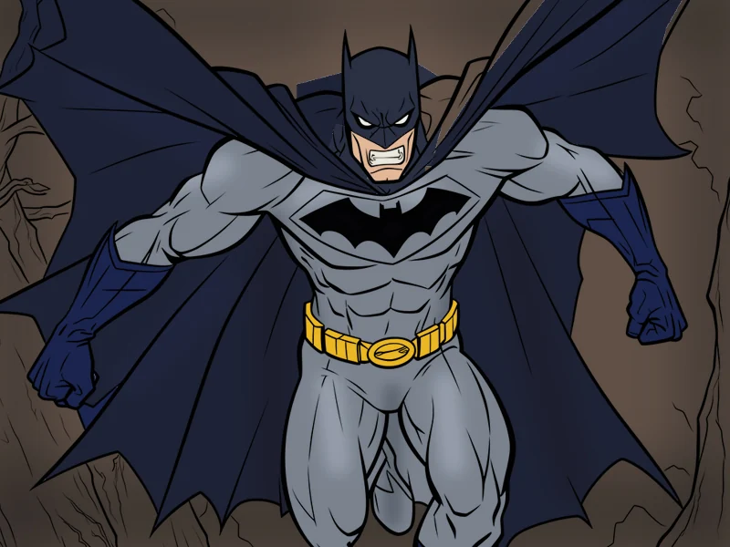

Dijital Renklendirme
Karakalem Renklendirme — Batman
Karakalem Batman çizimini, çizgi dokusunu koruyarak ayrı renk katmanları ve ışık-gölgeyle renklendirdiğim projem.
Adobe Photoshop · Onur Can Orhan · Kasım 2026

Karakalem Renklendirme
Batman çizimini katmanlarla renklendirme
Karakalem çizimini, konturları koruyarak renklendirdim. Kostüm, pelerin, maske, kemer ve arka planın renklerini ayrı ayrı kontrol edebileceğim bir yapı kurdum.
Nasıl hazırladım?
Her bölgeyi seçip kendi katmanında boyadım ve seçimleri alpha kanallarına kaydettim. Çizgiler katmanını en üstte Multiply modunda tuttum. Burn ve Dodge araçlarıyla gölge ve ışık ekleyerek düz renkleri hacimlendirdim.
Alpha kanalları · Multiply · Dodge · Burn · Katman düzeni

Ortaya çıkan sonuç
Kostümün gri tonlarını koyu mavi pelerin ve sarı kemerle dengeledim. Seçimleri ve renkleri ayrı tuttuğum için her bölgeyi çizgilere zarar vermeden yeniden düzenleyebiliyorum.